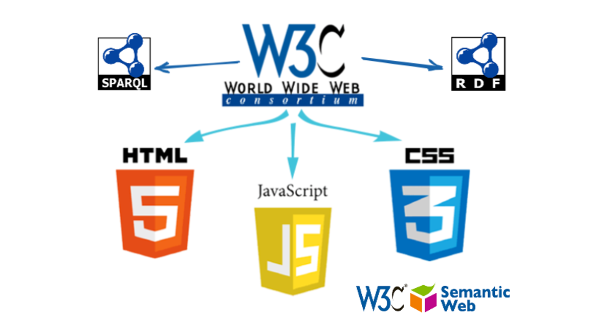

W3C: как создаются открытые веб-стандарты

НовоеКонсорциум Всемирной паутины (W3C) основан в 1994 году Тимом Бернерсом-Ли. Его задача — разрабатывать открытые стандарты, по которым разные браузеры, устройства и программы понимают друг друга.
Работа идёт в рабочих группах: специалисты обсуждают черновик, публикуют его для общего обсуждения и только после проверки браузерами выпускают рекомендацию W3C. Именно так появились HTML, CSS, SVG и руководства по доступности WCAG.
Главный принцип консорциума — совместимость. Сайт, сделанный по стандарту, должен одинаково работать в любом браузере, быть доступным людям с ограничениями здоровья и не зависеть от одного производителя.
Чтобы стандарт оставался открытым, W3C требует от участников рабочих групп бесплатных лицензий на патенты, без которых рекомендацию нельзя было бы реализовать. Поэтому браузеры, библиотеки и операционные системы могут поддерживать HTML и CSS без отдельных договоров с авторами спецификаций.
Спецификации развиваются постепенно. Например, CSS разбит на модули: отдельно описываются цвета, сетки, анимации и адаптивная вёрстка. Такую спецификацию проще обновлять, не переписывая весь язык целиком, а разработчики видят, какие возможности уже поддерживаются браузерами.
Стандарты W3C проверяются практикой. Рабочие группы собирают отзывы разработчиков, тестируют новые возможности в браузерах и выпускают исправления. Именно поэтому рекомендации остаются живыми документами, а не набором правил, застывших на бумаге.
Отдельное направление работы — доступность. Руководства WCAG объясняют, как делать сайты удобными для людей с нарушениями зрения, слуха и моторики: добавлять текстовые описания изображений, сохранять контраст и управлять страницей с клавиатуры.
W3C также заботится о международной работе веба. Спецификации опираются на Unicode, поддерживают разные направления письма и требуют указывать язык документа. Благодаря этому один и тот же стандарт подходит для сайтов на любом языке, а не только для английского.
Принять участие в разработке может не только крупная компания. У W3C есть общественные группы и открытые обсуждения, где разработчики предлагают уточнения и сообщают о проблемах реализации. Так стандарт получает проверку разными участниками рынка ещё до официальной публикации.
Рекомендации W3C не являются законом: их применяют добровольно. Но именно общая договорённость позволяет вебу оставаться открытым и развиваться без единого владельца.